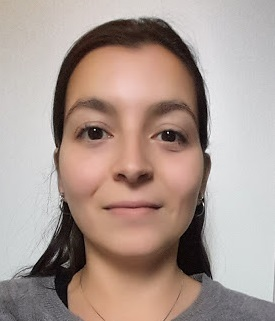

|  |
Daniela Sol Ceballos
Junior Web Developer
I am argentinean, living in Berlin and starting a new career in Web Development.
I worked for ten years in Foreign Trade, in the meantime I studied Construction at Integral taller de arquitectura, in Buenos Aires.
Once I finished my studies I decide to take some distance and I came to Germany with the idea of learning the language and be part of the traditions during a year. Unfortunately, at the beginning of my arrival, COVID-19 showed up, and we had the first Lock down.
During this free time, I started a deep search into Web Development as a hobby. After some courses I realized that this exciting world fits perfect with me.
As you may see, I like challenges and I easily adapt to different functions and environment. Besides, I have good people skills, I am organized, responsible, proactive and fully committed.
That's why I strongly believe that this is the time to change my career and earn new experiences.
|